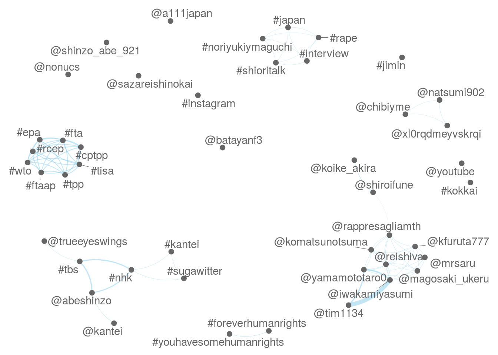

library(quanteda)等で
corp <- data_download(url = 'https://www.dropbox.com/s/zek14n7ovtt25ek/data_corpus_abetweets.rds?dl=1')
texts(corp) <- stringi::stri_trans_nfkc(texts(corp))ndoc(corp)## [1] 8411range(docvars(corp, 'created_at'))## [1] "2017-12-16 12:14:46 GMT" "2017-12-18 10:50:08 GMT"mt <- dfm(corp, select = c('#*', '@*'))
mt <- dfm_select(mt, min_nchar = 2)
mt <- dfm_trim(mt, min_count = 5)
mt_col <- fcm(mt)
feat <- names(topfeatures(mt_col, 100))
textplot_network(fcm_select(mt_col, feat))